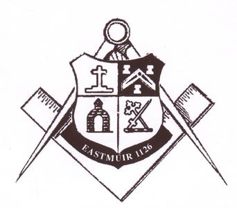
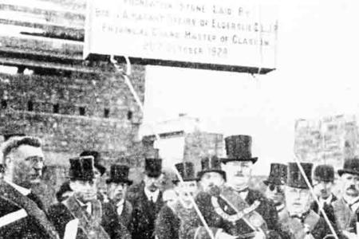

History
A strong desire existed among Freemasons resident in the eastern end of Shettleston to have a Masonic Lodge. When the old Eastmuir School was vacated application was made for part of the building for adaptation for Masonic purposes, and in due course a let of the hall was secured from the School Board.
Eighty-six Master Masons as founders presented a petition to Grand Lodge, and a Charter was granted on 28th May 1913. The Consecration and Erection ceremony of the new Lodge, under the title “Eastmuir No. 1126”, took place on 21st January 1914. The origin of the Lodge Seal can be described as follows:
A shield surmounted by a scroll inscribed “Villam Filie Sedin” (country house of the son of Sedin) which historians claim to be the first known reference to the name “Shettleston” in the ancient records of Glasgow. The shape of the shield is copied from the Coat of Arms of the Hamiltons, to be found above the gateway at Provanhall Farm, where also is the arch in the lower left quarter of the Seal.
The cross in the top left quarter represents the old cross of Shettleston, mentioned in a charter granted in 1226 to the Bishop of Glasgow, prohibiting the Magistrates of Rutherglen from taking toll within the Burgh of Glasgow, “except at the cross of Schedinestun”.
In the top right hand quarter is the right half of the Seal of the Grand Lodge of Scotland, and in the lower right quarter the Crest of the first Master, John Adam, of Larchgrove, Shettleston.
Our first Right Worshipful Master was Bro. John Adam of Larchgrove who was a prominent businessman in the city of Glasgow and a Master Mason of The Mother Lodge of Scotland in Kilwinning. His residence was at the North end of Hallhill Road close to Edinburgh Road. The entrance driveway is still visible and marked by two pillars which sadly are now in a poor state of repair. The driveway was lined on each side by rows of large trees some of which are still standing
The foundation stone of the new permanent building at 1543 Shettleston Road was laid on 20th October 1928 by Bro. A.A. Hagart Spiers of Elderslie, D.L., J.P., Provincial Grand Master of Glasgow. The lodge continues to meet in these premises to this day and has recently celebrated it’s centenary.
In 1904 John Adam became chairman of the Western Section of the Scottish Automobile Club. Once an ardent lover of horses, he sold most of them and converted his stables into a modern garage for the time.
At the instigation of Mr John Adam of Larchgrove, Springboig, a group of enthusiasts held a meeting in Hill Street Hall, Shettleston, on 20th June 1905 and formed the Sandyhills Golf Club. An area of 61 acres once known as Sandyhills Park was leased from Mr J. Cassels of Sandyhills House and a course lay-out prepared by a Mr Tulloch. The grass was cut and the course laid out to Mr Tulloch’s plans by members of the committee. The course was officially opened in April 1906 with Mr John Adam, the first club Captain, driving off the first tee with a silver cleek presented to him by the committee. In 1910 the course was extended to the south, across the Battle Burn.
On 21st July 1935, John Adam sadly passed away at his new home Innerpeffray House, near Crieff. A service was held at Innerpeffray House by the Rev. William Riddell following which the cortege proceeded to the Glasgow Necropolis. The service at the graveside was conducted by the Rev. Andrew Campbell, St. Michael’s Parish Church Crieff. Among the pall-bearers were Mr. George Henderson who had been Mr. Adam’s chauffeur for 23 years and Mr. A.A. Hagart Speirs who just 7 years previously had laid the foundation stone at Lodge Eastmuir’s new premises at 1543 Shettleston Road.